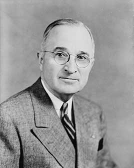

Became president when Roosevelt died in April 1945. He ordered the atomic bombings of Hiroshima and Nagasaki, launched the Marshall Plan and NATO, desegregated the armed forces by executive order, won a surprise victory in 1948 and took the country into the Korean War. The Supreme Court struck down his seizure of the steel mills in 1952.
Shaded areas show the years in office, with a few years before and after for comparison. Budget years ran July to June until 1976 (now October to September), so each year's figures cover parts of two calendar years.
June 30, 1944 (end of fiscal 1944): $201.00 billion → June 30, 1952 (end of fiscal 1952): $259.11 billion
Daily debt figures don't exist before 1993, so Truman's numbers use the fiscal years closest to his term, the same rule as every other page. Almost all of the rise came in fiscal 1945 (July 1944 to June 1945), which was mostly Roosevelt's and wartime; from June 1945 to June 1952 the debt went from $258.7 billion to $259.1 billion.
Debt as a share of GDP. Above 100% means the debt is bigger than a year of everything the country produces.
Money borrowed each budget year (below the line) or paid down (above).
1945 (year): 1.9% → Jan 1953: 2.9%. Monthly figures begin in 1948. Chart shows yearly averages; before 1948, estimates by economist Stanley Lebergott.
How much prices rose each year (consumer price index).
What everyday prices and paychecks did while in office.
Prices use the consumer price index (MeasuringWorth). The minimum wage is the federal rate set by Congress.
894 orders, numbered 9538–10431. The American Presidency Project counts 907, including lettered orders.
Source: Wikipedia: list of Truman's executive actions (full list of every order).
Created the committee whose 1947 report, 'To Secure These Rights', called for anti-lynching and voting rights laws.
Federal RegisterRequired loyalty investigations of every federal employee; about 300 were fired as security risks by 1952.
Federal RegisterBanned racial discrimination in federal hiring.
Federal RegisterOrdered equal treatment in the military regardless of race; the last all-Black units were disbanded in 1954.
Federal RegisterTook over the steel industry to head off a strike during the Korean War. The Supreme Court ruled it unconstitutional two months later.
Federal RegisterA pardon wipes out the punishment for a federal crime; a commutation shortens a sentence but leaves the conviction. Counts are by federal fiscal year (July to June). Fiscal 1945 covers April 12 to June 30, 1945. He also signed three proclamations pardoning some ex-convicts who served in World War II or Korea and some deserters; the Truman Library gives no count for those.
Source: U.S. Dept. of Justice, clemency statistics, which lists every recipient with the crime and sentence.
The crime: Mail fraud in a wartime contracting scheme (convicted 1946)
Sentence: 6 to 18 months; served 5
Why it drew attention: The sitting Democratic mayor of Boston. Truman commuted his sentence in 1947 and fully pardoned him in 1950.
SourceThe crime: Padding his congressional payroll and taking kickbacks (pleaded no contest 1949)
Sentence: 6 to 18 months and a $10,000 fine; served about 9 months
Why it drew attention: A Republican congressman and former chairman of the House Un-American Activities Committee.
SourceThe crime: Attempting to assassinate Truman at Blair House (1950); a police officer was killed
Sentence: Death
Why it drew attention: Truman commuted the death sentence of the man who tried to kill him to life in prison. Carter later released him in 1979.
SourceThe same checklist for every president. Tap a row for details and sources.
Several House members filed impeachment resolutions over the 1952 steel seizure; none came to a vote.
Never charged.
His appointments secretary, Matthew Connelly, and the head of the Justice Department's tax division, T. Lamar Caudle, were convicted in 1956 of conspiring to fix a tax case. Dozens of tax collectors were fired and several were convicted.
SourceIn 1952 Attorney General J. Howard McGrath appointed Newbold Morris to investigate corruption, then fired him; Truman fired McGrath the same day.
SourceThe Church Committee found the FBI sent Truman's White House information from wiretaps on political figures, including Washington lawyer Thomas Corcoran, from 1945 to 1948.
SourceWhat happened, what was proven, and how it ended.
Truman ordered atomic bombs dropped on Hiroshima and Nagasaki; an estimated 110,000 to 210,000 people died by the end of 1945.
Outcome: Japan surrendered days later. Whether the bombings were necessary to end the war is still debated.
SourceTruman ordered the government to take over the steel industry without authority from Congress to avert a strike during the Korean War.
Outcome: The Supreme Court ruled it unconstitutional, 6–3, in Youngstown Sheet & Tube Co. v. Sawyer.
SourceCongressional investigations found bribery and tax-fixing at the Bureau of Internal Revenue and influence-peddling around the White House.
Outcome: More than 160 tax officials were fired or resigned; several aides and officials were convicted; Truman reorganized the bureau in 1952.
SourceMillions of federal workers were screened for disloyalty, often on anonymous accusations.
Outcome: About 300 were fired and thousands resigned. Supporters saw it as needed security; critics call it a forerunner of McCarthyism.
SourceWidely quoted remarks, with the context they were said in.
I believe that it must be the policy of the United States to support free peoples who are resisting attempted subjugation by armed minorities or by outside pressures.
Sixteen hours ago an American airplane dropped one bomb on Hiroshima.
The buck stops here!